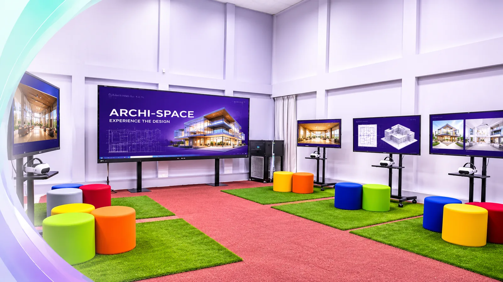

2024
Asas & kesediaan
TECC 2.0 sebagai asas pembelajaran kolaboratif; garis panduan, pelan ruang, tinjauan pelajar dan perancangan TECC 4.0.
Dokumentasi asasLaporan 2024Terokai bagaimana TECC 2.0 dan TECC 4.0 Digital EyeZ menyokong pembelajaran kolaboratif, teknologi imersif dan inovasi digital di POLIPD.
Pilih ruang untuk membuka laporan penggunaan 2026 dan dokumen sokongan masing-masing.
 RUANG KOLABORATIF / 01
RUANG KOLABORATIF / 01Berkolaborasi. Berinteraksi. Belajar bersama.

RUANG IMERSIF / 02Hayati. Cipta. Terokai tanpa batas.
Data pelaporan 2026 · snapshot 26 November


Angka adalah rekod pelaporan sementara, bukan ukuran penggunaan fizikal yang disahkan.
Satu kesinambungan pembangunan ruang, pedagogi dan teknologi di POLIPD.
TECC 2.0 sebagai asas pembelajaran kolaboratif; garis panduan, pelan ruang, tinjauan pelajar dan perancangan TECC 4.0.
Dokumentasi asasLaporan 2024Pengukuhan TECCgogy, pengurusan ruang dan perkongsian pengetahuan.
532 jam PdP berjadualLaporan 2025Pelaporan bersepadu TECC 2.0 dan Digital EyeZ, penggunaan XR serta inovasi ARCHI-SPACE.
633 jam PdP berjadual*Terokai Digital EyeZ*Angka 2026 sementara berdasarkan data laman; tertakluk kepada semakan jadual. Angka 2025 daripada TECC Annual Report 2025.
Terokai ruang dan hala tuju kamiSetiap sel membuka bahagian berkaitan. Status dikemas kini daripada fail data tunggal.
| TECC 2.0 | TECC 4.0 |
|---|
Bukti dan lampiran dikumpulkan di satu tempat. Lihat Bukti & Lampiran ↗
Portal pelaporan ini menghimpunkan maklumat asas, kaedah penggunaan dan rekod aktiviti, SOP serta penyelenggaraan, dan platform penyebarluasan — mengikut empat komponen Panduan Pelaporan Ruang Pembelajaran Termaju POLYCC.
Nota pematuhan: Panduan rasmi menetapkan Google Sites untuk penyerahan. Laman web HTML ini ialah versi custom dan perlu mendapat persetujuan penyelaras sekiranya menggantikan Google Sites.
Lihat panduan rasmi ↗Bandingkan fungsi, kapasiti dan kemudahan kedua-dua ruang.